- 安裝R 與Rstudio
- Rstudio 功能簡介
- 上手R 程式撰寫
上手R語言
Wush Wu
國立台灣大學
大綱
安裝R 與Rstudio
事前注意事項
- Windows 使用者請確定自己的使用者名稱不包含中文
- 否則請開一個純英文的使用者名稱
安裝R
- CRAN
- 台大的CRAN Mirror
- 依據作業系統做選擇:
- Windows --> base --> Download R 3.3.2 for Windows --> 打開下載後的檔案並安裝
- Mac OS X --> R-3.3.2.pkg --> 打開下載後的檔案並安裝
- Linux 請參考不同distribution的安裝說明，有問題課後找助教
影片示範: Windows

- 影片中的範例是 3.0.2 的版本，請使用者記得安裝 3.1 以上的版本喔！
影片示範: OS X

- 此影片由中華R軟體學會的李明昌老師提供
Linux Ubuntu
sudo sh -c 'echo "deb http://cran.csie.ntu.edu.tw/bin/linux/ubuntu trusty/" >> /etc/apt/sources.list'
sudo apt-key adv --keyserver keyserver.ubuntu.com --recv-keys E084DAB9
sudo apt-get update && apt-get install -y r-base libcurl4-openssl-dev libxml2-dev espeak
安裝Rstudio
- Rstudio
- Desktop --> Open Source Edition --> 根據作業系統選擇
示範影片搜尋
- Rstudio 的官方網頁一直在改版... 所以請在Google搜尋最近一個月關於「how to install rstudio」的影片
- 可能失效的範例：

RStudio 界面介紹
程式碼編輯區(1)
- 主要撰寫程式碼的區域
- 具備多種功能協助我們使用程式碼
語法錯誤提示
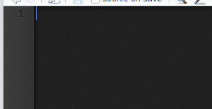
自動完成與說明文件
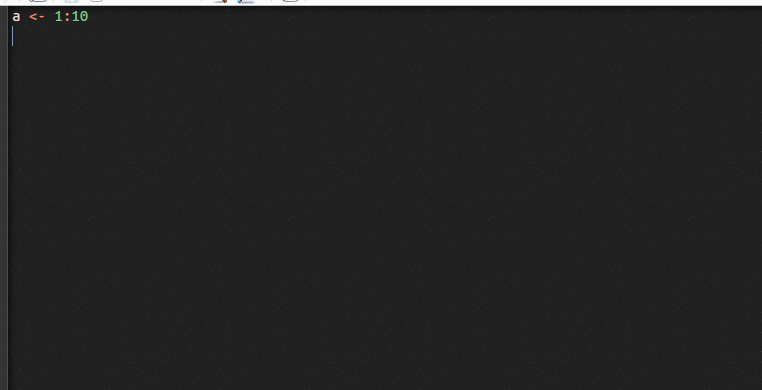
對稱的括號提示
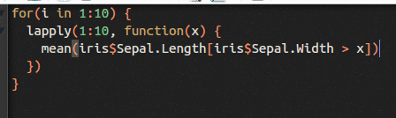
Console(2)
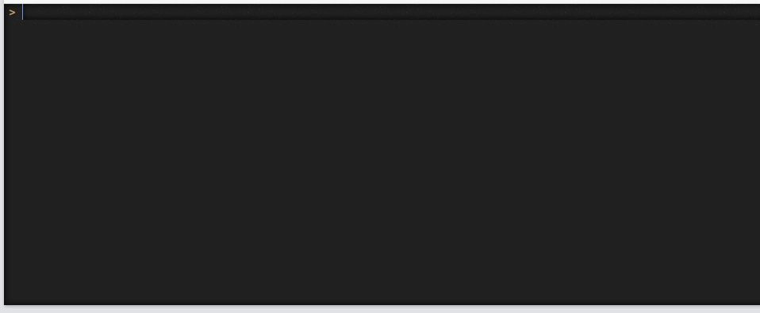
環境資訊(3)
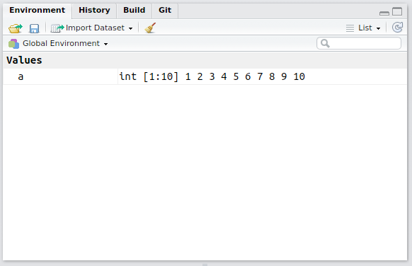
檔案系統、說明文件與圖片(4)
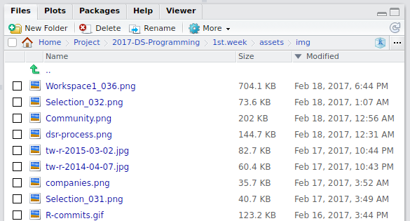
檔案系統、說明文件與圖片(4)
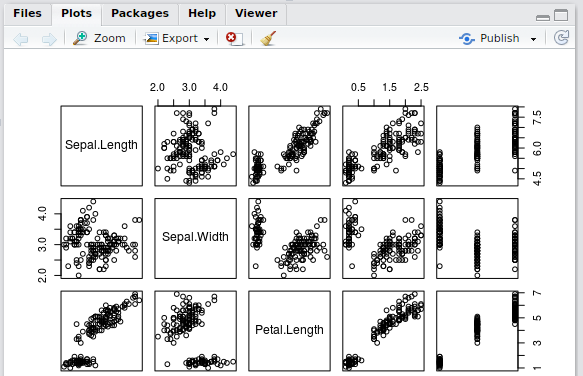
檔案系統、說明文件與圖片(4)
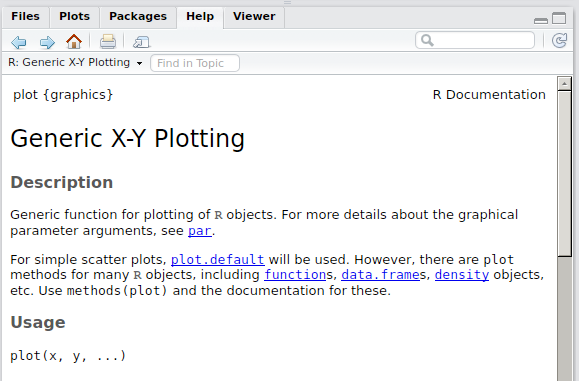
上手R 程式撰寫
學習目標
- 了解什麼是
expression(敘述) - 了解變數(名字、值)
- 了解assignment
- 了解函數、參數
- 學習簡易套件安裝
expression
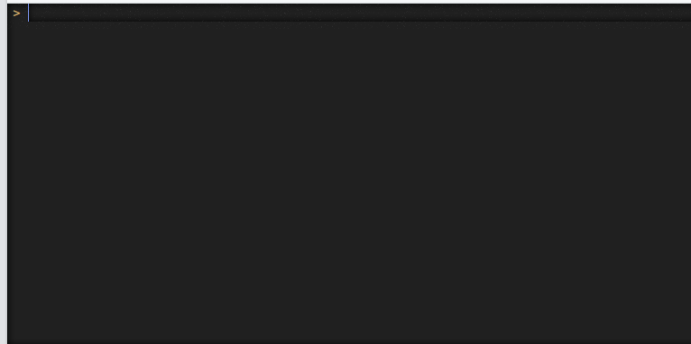
expression
- R 的程式是由一個又一個的expression所構成
- Console 會回應每一個「完整」的expression
- Console上的
>代表「R 正準備接受下一個expression」 Enter代表一個expression的結束
expression
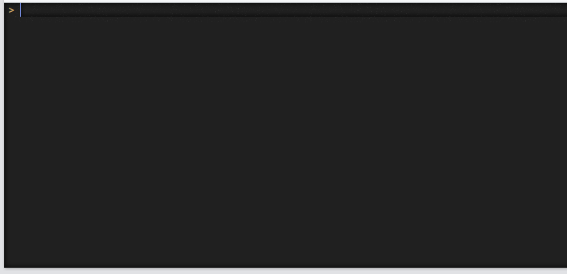
expression
- 先乘除後加減，括號更優先
- Console上的
+代表「R 認為expression沒有結束」 - 完成expression後R 才會處理
ESC可以中斷expression
expression
- 輸入到console的程式碼，都會被當成expression處理
#之後的程式碼不會被處理，稱為「註解」- 投影片之後會用以下格式Demo程式碼的執行結果:
[1] 2
練習: 請同學估計以下資料所需要的記憶體
- 買電腦的時候，上面會寫：這台筆記型電腦有4GB的記憶體(RAM)
- 在電腦中資料的單位：
- 1個
0或1是一個位元(bit) - 8個
0或1是一個位元組(Bytes) - 1024個位元組是1KB
- 1024KB是1MB
- 1024MB是1GB
- 1個
- 請問: 1MB是多少位元?
- 一個整數需要4個位元組大小的記憶體，請問50000個整數需要多少記憶體? 請用MB為單位
練習: 請同學估計以下資料所需要的記憶體
- 全台灣人的身份證字號與性別的表格
- 2300萬人
- 身份證字號共10碼，每碼佔用1Bytes
- 性別以整數紀錄，
0: 女性、1：男性 - 請問需要多大的記憶體(MB)儲存上述資料？
練習: 請同學查詢自己的電腦有多少記憶體
或是看課堂老師的說明
變數
- 變數的概念很接近數學的「未知數」
- 範例:
y = x + 1
x 代入 1 則 y 為 2
x 代入 2 則 y 為 3
字串
- 前後利用
"所夾住的文字，在程式碼中會視為字串(character)
[1] 2
[1] "1 + 1"
- 字串不是程式碼、字串不是變數
- 字串就是文字
- 字串與變數的不同：R 處理變數的名字時，會先找到該名字所對應的值，用值把名字替換掉之後再執行
字串 v.s. 變數的名字

透過變數，我們可以描述「邏輯」
- 儲存2300萬人的身份證字號與性別需要多大的記憶體(MB)?
[1] 307.0831
- 儲存
x萬人的身份證字號與性別需要多大的記憶體(MB)?
透過變數，我們可以描述「邏輯」
- 儲存台北市270萬人的身份證字號與性別需要多大的記憶體(MB)?
[1] 36.04889
- 儲存新北市400萬人的身份證字號與性別需要多大的記憶體(MB)?
[1] 53.40576
變數
描述從名字到值的關係
- 每個變數都有一個「名字」與對應的「值」
r x = 270
- 每個變數都有一個「名字」與對應的「值」
x是名字、值則是270x = 270這類型的程式碼被稱為assignment(賦值)assignment是不是一種expression?
在R 裡面，以下都是assignment
練習
# 雲林縣的人口有69萬人、苗栗縣有56萬人、新竹縣有55萬人、嘉義縣有52萬人，
# 請問儲存以上縣市所有的身份證字號(用10個文字，10 Bytes)、性別(用整數，4 Bytes)與電話號碼(用整數4 Bytes)
# 需要多少記憶體(MB)? 請用x 的方式寫
x <- <數字>
x * 10000 * (<每儲存一個人的資訊所需要的記憶體大小>) / 1024 / 1024
- 提示: 請在程式碼編輯區操作
- File -> New File -> R Script (CTRL + SHIFT + N)
- 嘗試輸入以下的程式碼，並且把
<數字>與<每儲存一個人的資訊所需要的記憶體大小>替換成你的expression - 當游標在程式碼編輯區時，按下CTRL + ENTER可以把程式碼輸入Console
- 不同的
x <- <數字>可以算出不同的答案
可能的答案
[1] 11.84464
[1] 9.613037
[1] 9.441376
輸入與輸出的關係
- 輸入是變數
x, 輸出是x * 10000 * (10 + 4 + 4) / 1024 / 1024 - 這是一個函數
- R 也可以建立函數:
f <- function(x) x * 10000 * (10 + 4 + 4) / 1024 / 1024
可能的答案
[1] 11.84464
[1] 9.613037
[1] 9.441376
[1] 8.926392
使用R 會用到大量的函數
使用R 會用到大量的函數
- 具體提供以下功能的，都是函數
- 讀取資料
- 清理資料
- 繪圖
了解R 中的函數
- 函數的本質也是變數
- 函數有名字
- 值的本質是函數
[1] 2.5
[1] 2.5
了解R 中的函數
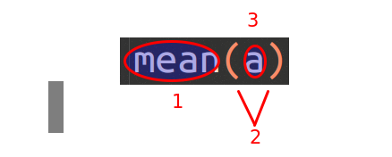
mean: 函數的名字(、): 括號。名字後面接括號，代表這個名字的變數是一種函數a:arguments(參數)
了解R 中的函數
- 函數就是「動作」
- 範例：「計算需要的記憶體的動作」, 之前的練習所提到的函數
- 範例：「計算x的平均數」,
mean(x)
- 名字是動作的名稱
mean: 算平均數sd: 算樣本標準差
- 參數控制動作
mean(x): 計算x 的平均數mean(y): 計算y 的平均數mean(x, na.rm = TRUE): 計算x 的平均數，不包含遺失值
了解R 中的函數
- 函數就是功能
- R 之中有許許多多的函數
- 讀取資料的函數
- 處理資料的函數
- 操作檔案的函數
- 輸出資料的函數
- R 的套件，提供更多更多的函數
套件
- 有些提供R 沒有提供的功能
- 處理網頁的套件:
XML、xml2、jsonlite - 爬網站的套件:
httr - 跑進階分析(某篇paper的演算法)的套件:
supc
- 處理網頁的套件:
- 有些提供類似，但是設計不同的功能
- 整理資料:
dplyr - 繪圖:
ggplot2
- 整理資料:
- 有些提供資料
- 棒球資料:
Lahman
- 棒球資料:
套件
- 套件提供函數、函數就是功能，所以套件就是提供「一系列相關主題的功能」
- 套件本身都會提供說明文件，解釋如何使用套件
examplesdemovignettes
- 如果我要找特定功能的套件，怎麼辦?
安裝套件
install.packages("ctv")
載入套件
Error in library(ctv): there is no package called 'ctv'
使用套件的函數
Error in loadNamespace(name): there is no package called 'ctv'
Error in x[[5]]: subscript out of bounds
函數的參數
function (pkgs, lib, repos = getOption("repos"), contriburl = contrib.url(repos,
type), method, available = NULL, destdir = NULL, dependencies = NA,
type = getOption("pkgType"), configure.args = getOption("configure.args"),
configure.vars = getOption("configure.vars"), clean = FALSE,
Ncpus = getOption("Ncpus", 1L), verbose = getOption("verbose"),
libs_only = FALSE, INSTALL_opts, quiet = FALSE, keep_outputs = FALSE,
...)
NULL
函數的參數
install.packages負責安裝套件電腦需要知道動作的細節才能運作:
- 要安裝什麼套件?
- 從哪裡安裝套件?
- 以及其他種種細節
函數的參數
function (pkgs, lib, repos = getOption("repos"), contriburl = contrib.url(repos,
type), method, available = NULL, destdir = NULL, dependencies = NA,
type = getOption("pkgType"), configure.args = getOption("configure.args"),
configure.vars = getOption("configure.vars"), clean = FALSE,
Ncpus = getOption("Ncpus", 1L), verbose = getOption("verbose"),
libs_only = FALSE, INSTALL_opts, quiet = FALSE, keep_outputs = FALSE,
...)
NULL
- 一個函數的參數可以有很多個
- 每個參數都有對應的「名字」
install.packages的參數有:pkg、lib、repos...pkg代表「要安裝的套件的名稱」repos代表「提供套件的網站」
函數的參數
function (pkgs, lib, repos = getOption("repos"), contriburl = contrib.url(repos,
type), method, available = NULL, destdir = NULL, dependencies = NA,
type = getOption("pkgType"), configure.args = getOption("configure.args"),
configure.vars = getOption("configure.vars"), clean = FALSE,
Ncpus = getOption("Ncpus", 1L), verbose = getOption("verbose"),
libs_only = FALSE, INSTALL_opts, quiet = FALSE, keep_outputs = FALSE,
...)
NULL
install.packages("ctv")
pkg:"ctv"
函數的參數
function (pkgs, lib, repos = getOption("repos"), contriburl = contrib.url(repos,
type), method, available = NULL, destdir = NULL, dependencies = NA,
type = getOption("pkgType"), configure.args = getOption("configure.args"),
configure.vars = getOption("configure.vars"), clean = FALSE,
Ncpus = getOption("Ncpus", 1L), verbose = getOption("verbose"),
libs_only = FALSE, INSTALL_opts, quiet = FALSE, keep_outputs = FALSE,
...)
NULL
install.packages("ctv", "http://cran.csie.ntu.edu.tw")
pkg:"ctv"lib:"http://cran.csie.ntu.edu.tw"
函數的參數
function (pkgs, lib, repos = getOption("repos"), contriburl = contrib.url(repos,
type), method, available = NULL, destdir = NULL, dependencies = NA,
type = getOption("pkgType"), configure.args = getOption("configure.args"),
configure.vars = getOption("configure.vars"), clean = FALSE,
Ncpus = getOption("Ncpus", 1L), verbose = getOption("verbose"),
libs_only = FALSE, INSTALL_opts, quiet = FALSE, keep_outputs = FALSE,
...)
NULL
install.packages("ctv", repos = "http://cran.csie.ntu.edu.tw")
pkg:"ctv"repos:"http://cran.csie.ntu.edu.tw"
函數的參數
function (pkgs, lib, repos = getOption("repos"), contriburl = contrib.url(repos,
type), method, available = NULL, destdir = NULL, dependencies = NA,
type = getOption("pkgType"), configure.args = getOption("configure.args"),
configure.vars = getOption("configure.vars"), clean = FALSE,
Ncpus = getOption("Ncpus", 1L), verbose = getOption("verbose"),
libs_only = FALSE, INSTALL_opts, quiet = FALSE, keep_outputs = FALSE,
...)
NULL
install.packages("ctv", repo = "http://cran.csie.ntu.edu.tw")
pkg:"ctv"repos:"http://cran.csie.ntu.edu.tw"
函數的參數
function (pkgs, lib, repos = getOption("repos"), contriburl = contrib.url(repos,
type), method, available = NULL, destdir = NULL, dependencies = NA,
type = getOption("pkgType"), configure.args = getOption("configure.args"),
configure.vars = getOption("configure.vars"), clean = FALSE,
Ncpus = getOption("Ncpus", 1L), verbose = getOption("verbose"),
libs_only = FALSE, INSTALL_opts, quiet = FALSE, keep_outputs = FALSE,
...)
NULL
install.packages("ctv", "http://cran.csie.ntu.edu.tw", lib = "/home/wush/Project/2017-DS-Programming/.lib")
pkg:"ctv"lib:"/home/wush/Project/2017-DS-Programming/.lib"repos:"http://cran.csie.ntu.edu.tw"
函數的參數: 預設值
function (pkgs, lib, repos = getOption("repos"), contriburl = contrib.url(repos,
type), method, available = NULL, destdir = NULL, dependencies = NA,
type = getOption("pkgType"), configure.args = getOption("configure.args"),
configure.vars = getOption("configure.vars"), clean = FALSE,
Ncpus = getOption("Ncpus", 1L), verbose = getOption("verbose"),
libs_only = FALSE, INSTALL_opts, quiet = FALSE, keep_outputs = FALSE,
...)
NULL
install.packages("ctv")
repos:getOption("repos")destdir:NULL
參數的規則
- 順序、名字
- 有給名字，則「部份比對名字」(Best Practice: 請打全名)
- 沒給名字，則照順序，但是會跳過已經給名字的參數
- 剩下的參數則考慮預設值
- 建議: 超過三個以上，都用使用「全名」來指定參數
練習
function (x, split, fixed = FALSE, perl = FALSE, useBytes = FALSE)
NULL
[[1]]
[1] "ab" "ef"
- 請問參數
x、split、fixed、perl與useBytes的值各為何?
總結
- 初步了解如何構成一個R 的程式
- 函數... 函數... 函數.......
- 當然還有其他的東西
- 函數就是功能，套件提供更多的函數
- 知道如何安裝套件